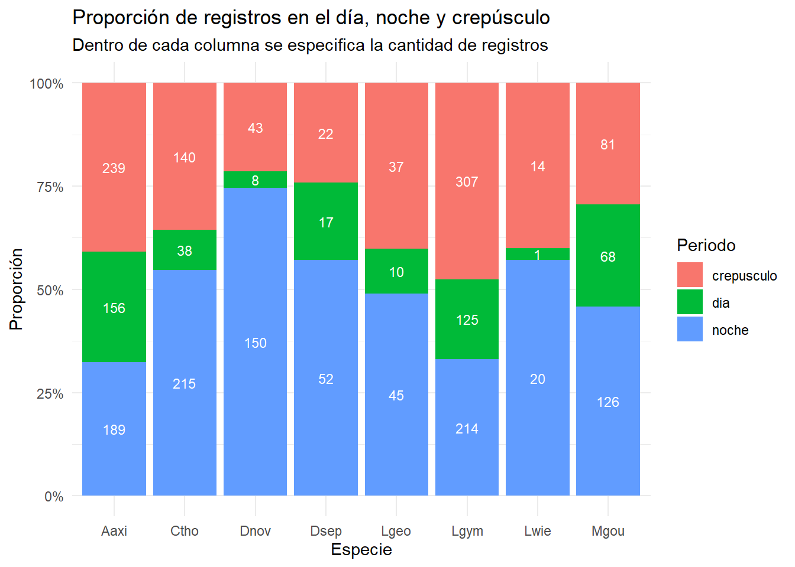
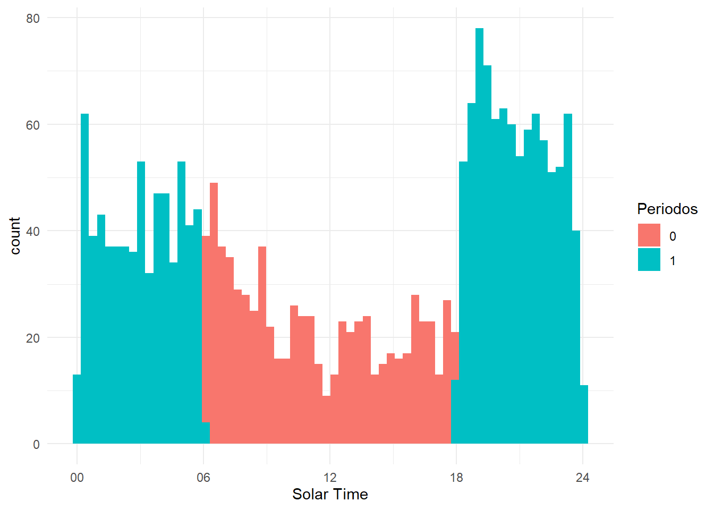

5 Categorías de nicho temporal
5.1 Noche, Día y Crepúsculo
Se clasificará como en la imagen:

load("data_processed/datos_procesados_v1.RData")
data <- data %>%
mutate(
periodos = case_when(
solar >= (5*pi)/3 | solar <= pi/3 ~ "noche",
solar > pi/3 & solar < (2*pi)/3 | solar > (4*pi)/3 & solar < (5*pi)/3 ~ "crepusculo",
solar >= (2*pi)/3 & solar <= (4*pi)/3 ~ "dia",
)) %>%
filter(!sp %in% c("Btau", "Cfam"))
tmp1 <- data %>% select(solar, clock, periodos)
ggplot(tmp1, aes(x = solar, fill = factor(periodos))) +
geom_histogram(binwidth = 0.1, position = "identity") +
scale_x_continuous(breaks = c(0, pi/2, pi, 3*pi/2, 2*pi),
labels = c("00", "06", "12", "18", "24")) +
labs(x = "Solar Time", fill = "Periodos") +
theme_minimal()tmp <- data %>%
group_by(sp, periodos) %>%
summarise(nn = n())
data_prop <- tmp %>%
group_by(sp) %>%
mutate(prop = `nn` / sum(`nn`)) %>%
ungroup()
# Graficar con etiquetas de `n()`
ggplot(data_prop, aes(x = sp, y = prop, fill = as.factor(periodos))) +
geom_bar(stat = "identity", position = "fill") +
geom_text(aes(label = `nn`),
position = position_fill(vjust = 0.5), # Centra el texto en cada sección de la barra
color = "white",
size = 3) +
scale_y_continuous(labels = scales::percent) +
labs(title = "Proporción de registros en el día, noche y crepúsculo", subtitle = "Dentro de cada columna se especifica la cantidad de registros", x = "Especie", y = "Proporción", fill = "Periodo") +
theme_minimal()
5.2 Diurno y nocturno
tmp <- data %>%
mutate(
periodos = case_when(
solar >= pi/2 & solar < 3*pi/2 ~ 0, # día
TRUE ~ 1 # noche
)
)
tmp1 <- tmp %>% select(solar, clock, periodos)
ggplot(tmp1, aes(x = solar, fill = factor(periodos))) +
geom_histogram(binwidth = 0.1, position = "identity") +
scale_x_continuous(breaks = c(0, pi/2, pi, 3*pi/2, 2*pi),
labels = c("00", "06", "12", "18", "24")) +
labs(x = "Solar Time", fill = "Periodos") +
theme_minimal()
tmp1 <- tmp %>%
group_by(sp, periodos) %>%
summarise(nn = n())
data_prop <- tmp1 %>%
group_by(sp) %>%
mutate(prop = `nn` / sum(`nn`)) %>%
ungroup()
# Graficar con etiquetas de `n()`
ggplot(data_prop, aes(x = sp, y = prop, fill = as.factor(periodos))) +
geom_bar(stat = "identity", position = "fill") +
geom_text(aes(label = `nn`),
position = position_fill(vjust = 0.5), # Centra el texto en cada sección de la barra
color = "white",
size = 3) +
scale_y_continuous(labels = scales::percent) +
labs(title = "Proporción de registros en el día (0) y noche (1)", subtitle = "Dentro de cada columna se especifica la cantidad de registros", x = "Especie", y = "Proporción", fill = "Periodo") +
theme_minimal()5.3 Conclusión
La elección de la cantidad de categorías genera un compromiso entre el número de datos y la resolución del análisis. Me refiero que si solo se tienen dos categorías, se podrán correr los modelos en casi todas las especies y cada categoría va a tener una buena cantidad de datos. Pero se podrían perder algunas respuestas más sutiles, como cambios del día -> crepúsculo -> noche.
Por lo tanto, para las especies donde existan datos suficientes se prefiere el uso de tres categorías temporales de nicho (día, noche y crepúsculo), pero en aquellas especies de n pequeño se realizarán los modelos con dos categorías temporales (día y noche).